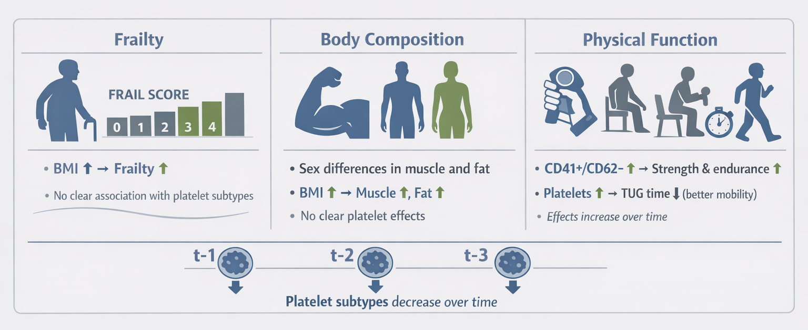

| Characteristic | Overall N = 137 |
Male N = 42 |
Female N = 95 |
Difference | 95% CI |
|---|---|---|---|---|---|
| Age (years old) | 70.4 ± 6.1 | 70.9 ± 5.9 | 70.2 ± 6.3 | 0.12 | -0.25, 0.49 |
| Diabetes (n) | 45 (33%) | 18 (43%) | 27 (28%) | ||
| Hypertension (n) | 85 (62%) | 29 (69%) | 56 (59%) | ||
| Dyslipidemia (n) | 85 (62%) | 29 (69%) | 56 (59%) | ||
| Systolic blood pressure (mmHg) | 131.7 ± 16.8 | 134.9 ± 17.8 | 130.3 ± 16.3 | 0.27 | -0.10, 0.64 |
| Diastolic blood pressure (mmHg) | 77.6 ± 10.7 | 81.0 ± 11.0 | 76.2 ± 10.4 | 0.45 | 0.07, 0.82 |
| Mean arterial pressure (mmHg) | 96.4 ± 11.4 | 99.2 ± 11.7 | 95.2 ± 11.1 | 0.35 | -0.02, 0.72 |
| Pulse pressure (mmHg) | 54.0 ± 14.9 | 54.0 ± 15.2 | 54.1 ± 14.8 | -0.01 | -0.38, 0.36 |
| Heart rate (bpm) | 73.0 ± 12.9 | 72.5 ± 17.5 | 73.2 ± 10.4 | -0.05 | -0.42, 0.32 |
| Weight (kg) | 76.0 ± 15.5 | 79.6 ± 12.7 | 74.5 ± 16.4 | 0.35 | -0.02, 0.73 |
| Height (cm) | 156.6 ± 9.2 | 165.3 ± 7.3 | 152.9 ± 7.2 | 1.7 | 1.3, 2.2 |
| BMI (km/m²) | 31.1 ± 6.4 | 29.1 ± 4.3 | 31.9 ± 7.0 | -0.48 | -0.85, -0.10 |
| Waist to Hip ratio | 0.9 ± 0.1 | 1.0 ± 0.1 | 0.9 ± 0.1 | 1.0 | 0.59, 1.4 |
| Total fat mass (%) | 35.5 ± 9.5 | 24.6 ± 5.8 | 40.3 ± 6.5 | -2.6 | -3.0, -2.1 |
| Total muscle mass (kg) | 45.8 ± 9.3 | 56.2 ± 7.7 | 41.3 ± 5.7 | 2.2 | 1.8, 2.7 |
| Apendicular muscle mass (kg) | 20.6 ± 5.1 | 25.9 ± 4.1 | 18.3 ± 3.6 | 2.0 | 1.6, 2.5 |
| Skeletal muscle index (km/m²) | 8.3 ± 1.6 | 9.5 ± 1.2 | 7.8 ± 1.4 | 1.3 | 0.85, 1.7 |
| Body water (%) | 48.0 ± 6.9 | 56.0 ± 4.4 | 44.5 ± 4.4 | 2.6 | 2.2, 3.1 |
| Bone mass (kg) | 2.5 ± 0.5 | 3.0 ± 0.3 | 2.2 ± 0.3 | 2.4 | 1.9, 2.9 |
| Dinamometer - Average (kg) | 24.5 ± 6.9 | 32.1 ± 5.3 | 21.2 ± 4.4 | 2.3 | 1.8, 2.8 |
| Dinamometer - Left hand (kg) | 24.2 ± 7.2 | 32.0 ± 5.7 | 20.8 ± 4.6 | 2.2 | 1.7, 2.7 |
| Dinamometer - Right hand (kg) | 24.8 ± 7.1 | 32.2 ± 5.8 | 21.5 ± 4.7 | 2.0 | 1.6, 2.5 |
| Total FRAIL score | -0.24 | -0.62, 0.13 | |||
| 0 | 72 (54%) | 22 (55%) | 50 (53%) | ||
| 1 | 39 (29%) | 15 (38%) | 24 (26%) | ||
| 2 | 21 (16%) | 3 (7.5%) | 18 (19%) | ||
| 3 | 1 (0.7%) | 0 (0%) | 1 (1.1%) | ||
| 4 | 1 (0.7%) | 0 (0%) | 1 (1.1%) | ||
| Chair sit-to-stand (reps) | 15.2 ± 4.9 | 16.5 ± 5.0 | 14.7 ± 4.8 | 0.36 | -0.02, 0.74 |
| Elbow flexion test (reps) | 17.7 ± 4.5 | 18.7 ± 4.7 | 17.3 ± 4.3 | 0.33 | -0.05, 0.71 |
| Timed-up and Go (seconds) | 6.0 ± 2.0 | 5.2 ± 1.5 | 6.4 ± 2.0 | -0.70 | -1.1, -0.31 |
| CD41⁻CD62⁻ (%) | 10.3 ± 12.3 | 13.1 ± 18.7 | 9.2 ± 8.6 | 0.28 | -0.20, 0.75 |
| CD41⁻CD62⁺ (%) | 0.2 ± 0.3 | 0.3 ± 0.3 | 0.2 ± 0.3 | 0.15 | -0.32, 0.63 |
| CD41⁺CD62⁻ (%) | 68.9 ± 17.8 | 64.9 ± 22.9 | 70.5 ± 15.4 | -0.29 | -0.77, 0.18 |
| CD41⁺CD62⁺ (%) | 20.6 ± 13.4 | 21.8 ± 16.9 | 20.2 ± 11.9 | 0.11 | -0.36, 0.59 |
Platelets and Frailty
Data Analysis Report
Matías Castillo-Aguilar ![]()
Overview

[…].
Statistical analysis
We analyzed the data using Bayesian multilevel regression models fitted in brms. The dataset was in long format, with repeated observations nested within participants and indexed by id. Time was treated as an ordered factor with three occasions (t-1, t-2, and t-3), and the model used polynomial contrasts for this factor. Accordingly, the time effect was represented by two orthogonal components, a linear term and a quadratic term, rather than by pairwise comparisons against a single reference level. The main aim of the models was to evaluate whether the longitudinal association between platelet subtypes and the study outcomes changed over time, while adjusting for sex, age, and body mass index (BMI). Participant-level heterogeneity was modeled through random intercepts. Because the same participants contributed repeated measurements, this random-intercept structure was used to account for within-person correlation across visits.
Let \(i = 1,\dots,N\) index participants and \(t \in \{1,2,3\}\) index measurement occasions. Let
\[ \mathbf{z}_{it} = \begin{pmatrix} P^{-}_{it} \\ P^{+}_{it} \\ \text{sex}_i \\ \text{age}_{i} \\ \text{BMI}_{i} \end{pmatrix}, \]
where \(P^{-}_{it}\) denotes the standardized percentage of CD41\(^+\)/CD62\(^-\) platelets and \(P^{+}_{it}\) denotes the standardized percentage of CD41\(^+\)/CD62\(^+\) platelets. To represent the ordered time factor, let
\[ \mathbf{c}_t = \begin{pmatrix} L_t \\ Q_t \end{pmatrix}, \] where \(L_t\) and \(Q_t\) are the linear and quadratic polynomial contrast scores for time, respectively. This notation keeps the model specification compact while preserving the structure of the fitted formulas. In all cases, time-by-covariate terms were included so that the association between platelet composition and the outcomes could vary across the longitudinal trajectory in its linear and quadratic components.
Frailty model
Frailty was analyzed as a binomial outcome with four trials per observation, corresponding to the FRAIL questionnaire score ranging from 0 to 4. Let \(F_{it}\) denote the frailty score for participant \(i\) at time \(t\). The model was specified as
\[ F_{it} \sim \text{Binomial}(4, p_{it}), \]
with logit link
\[ \text{logit}(p_{it}) = \eta^{(F)}_{it}. \]
The linear predictor was written as
\[
\eta^{(F)}_{it}
= \alpha_F
+ \mathbf{c}_t^\top \boldsymbol{\tau}_F
+ \mathbf{z}_{it}^\top \boldsymbol{\beta}_F
+ (\mathbf{c}_t \otimes \mathbf{z}_{it})^\top \boldsymbol{\Gamma}_F
+ u^{(F)}_i,
\] where \(\alpha_F\) is the intercept, \(\boldsymbol{\tau}_F\) contains the linear and quadratic time effects, \(\boldsymbol{\beta}_F\) contains the main effects of platelet percentages and covariates, and \(\boldsymbol{\Gamma}_F\) contains the interactions between the time polynomial terms and the predictors. The term \(u^{(F)}_i \sim \mathcal{N}(0,\sigma_F^2)\) is the participant-specific random intercept. This formulation implies that the association between each platelet subtype and frailty can differ not only over time in general, but specifically across the linear and quadratic components of the ordered time factor. Because the platelet predictors were included through mi(), missing values were handled inside the model rather than by complete-case deletion, so uncertainty in those predictors was propagated into the frailty estimates.
Although the FRAIL questionnaire score has four ordered levels, it was modeled as a binomial count with four trials because the score is bounded between 0 and 4 and the brms formulation directly accommodates this structure. The resulting coefficients are interpreted on the log-odds scale. Exponentiating a coefficient gives an odds ratio associated with a one-unit increase in the predictor, holding the remaining covariates constant. The coefficients for the time contrasts represent the shape of change across the three measurement occasions: the linear term captures monotonic increase or decrease across time, and the quadratic term captures curvature. The interaction terms indicate whether that temporal pattern differs according to platelet subtype or covariate level.
Body composition model
Muscle mass and fat mass were modeled jointly as a multivariate Gaussian outcome. Let \(M_{it}\) denote standardized muscle mass and \(G_{it}\) denote standardized fat mass. The joint response was
\[ \mathbf{Y}^{(C)}_{it} = \begin{pmatrix} M_{it} \\ G_{it} \end{pmatrix} \sim \mathcal{N}_2\!\left( \boldsymbol{\mu}^{(C)}_{it}, \boldsymbol{\Sigma}^{(C)} \right), \]
where \(\boldsymbol{\Sigma}^{(C)}\) is the residual covariance matrix. The outcome-specific linear predictor can be written compactly as
\[ \boldsymbol{\mu}^{(C)}_{it} = \boldsymbol{\alpha}_C + \mathbf{B}_C \mathbf{z}_{it} + \mathbf{A}_C \mathbf{c}_t + \mathbf{G}_C (\mathbf{c}_t \otimes \mathbf{z}_{it}) + \mathbf{u}^{(C)}_i. \]
Here, \(\boldsymbol{\alpha}_C\) is a 2-dimensional intercept vector, \(\mathbf{B}_C\) contains the main effects for the two platelet variables and the adjustment covariates, \(\mathbf{A}_C\) contains the linear and quadratic time effects, and \(\mathbf{G}_C\) contains the corresponding time-by-predictor interaction terms. The random-intercept vector \(\mathbf{u}^{(C)}_i\) captures subject-specific deviations for the two outcomes. This multivariate structure allows the two body-composition outcomes to be modeled jointly while estimating their residual correlation after adjustment for time, covariates, and participant-level heterogeneity.
This specification is useful because muscle mass and fat mass are biologically related and may show correlated variation that is not fully explained by the measured covariates. By modeling them jointly, the analysis exploits that dependence rather than treating the outcomes as statistically independent. The fixed effects quantify adjusted associations for each outcome separately, while the residual covariance matrix summarizes the remaining contemporaneous association between muscle and fat mass after accounting for the predictors in the model.
Physical function model
Physical function was modeled in the same multivariate framework, but with four Gaussian outcomes. Let \(D_{it}\) denote standardized average handgrip strength, \(S_{it}\) standardized chair sit-to-stand performance, \(E_{it}\) standardized elbow flexion performance, and \(T_{it}\) standardized timed up-and-go performance. The joint response was
\[ \mathbf{Y}^{(F)}_{it} = \begin{pmatrix} D_{it} \\ S_{it} \\ E_{it} \\ T_{it} \end{pmatrix} \sim \mathcal{N}_4\!\left( \boldsymbol{\mu}^{(F)}_{it}, \boldsymbol{\Sigma}^{(F)} \right). \]
The corresponding linear predictor was
\[ \boldsymbol{\mu}^{(F)}_{it} = \boldsymbol{\alpha}_F + \mathbf{B}_F \mathbf{z}_{it} + \mathbf{A}_F \mathbf{c}_t + \mathbf{G}_F (\mathbf{c}_t \otimes \mathbf{z}_{it}) + \mathbf{u}^{(F)}_i. \] As in the body-composition model, \(\boldsymbol{\alpha}_F\) is a vector of intercepts, \(\mathbf{B}_F\) contains the main effects, \(\mathbf{A}_F\) contains the linear and quadratic effects of time, \(\mathbf{G}_F\) contains the time-by-predictor interactions, and \(\mathbf{u}^{(F)}_i\) denotes the participant-specific random intercepts. The covariance matrix \(\boldsymbol{\Sigma}^{(F)}\) captures residual dependence among the four function outcomes after adjustment.
This multivariate specification is appropriate because the physical function tests are related but not identical aspects of performance. Handgrip strength, chair stand, elbow flexion, and timed up-and-go may share common determinants, yet each outcome also retains outcome-specific variation. Joint modeling allows the estimated associations with platelet subtypes to be assessed simultaneously across all four outcomes, while preserving their correlation structure. In practice, this is preferable to running separate univariate models if the aim is to compare effect patterns across the functional domain and to obtain a coherent multivariate summary.
Estimation and interpretation
All models were estimated in a Bayesian framework. Posterior summaries were used to describe the adjusted associations between platelet subtypes and the outcomes. For each coefficient, we examined the posterior mean or median and the corresponding 95% credible interval. The main effects of the platelet variables describe associations across the longitudinal trend after accounting for the polynomial time structure, rather than associations at a single reference visit. The coefficients attached to \(\mathbf{c}_t\) quantify the overall linear and quadratic shape of change across t-1, t-2, and t-3 when all continuous predictors are held constant. The time-by-predictor interaction terms indicate whether the relationship between platelet composition and the outcome changes in its linear or quadratic component over time.
For the frailty model, coefficients are interpreted on the log-odds scale and can be expressed as odds ratios by exponentiation. For the Gaussian models, coefficients are interpreted as expected changes in the standardized outcome per one-unit increase in the predictor, holding the other terms constant. Because the outcomes in the body-composition and physical-function models were standardized, the coefficients are directly comparable in standardized units across outcomes. The residual correlation matrices in the multivariate models were also examined, since they quantify the dependence among outcomes that remains after adjustment for the fixed effects and random intercepts.
Model interpretation focused on the magnitude and direction of the posterior estimates, together with uncertainty reflected in the credible intervals. Time-by-platelet interactions were treated as evidence of effect heterogeneity across the ordered follow-up trajectory, specifically whether the association differed in the linear or quadratic temporal component. In the multivariate models, a nonzero residual correlation suggests that outcomes still share variation beyond what is explained by the measured predictors, which supports the use of a joint modeling strategy rather than independent regressions.
Results
Sample characterization
The study included 137 participants, of whom 42 (30.7%) were male and 95 (69.3%) were female. The mean age of the sample was 70.4 ± 6.1 years, with no meaningful difference between sexes (70.9 ± 5.9 in males vs 70.2 ± 6.3 in females). Cardiometabolic conditions were common, with diabetes present in 32.8% of participants and hypertension and dyslipidemia each affecting 62.0% of the sample.
Anthropometric measures differed by sex. Males were taller (165.3 ± 7.3 cm vs 152.9 ± 7.2 cm) and had lower BMI (29.1 ± 4.3 vs 31.9 ± 7.0 kg/m²). Body composition also showed marked differences, with males presenting lower total fat mass (24.6 ± 5.8% vs 40.3 ± 6.5%) and higher total muscle mass (56.2 ± 7.7 kg vs 41.3 ± 5.7 kg), appendicular muscle mass, skeletal muscle index, body water percentage, and bone mass.
Physical performance measures were consistently higher in males. Average handgrip strength was 32.1 ± 5.3 kg in males and 21.2 ± 4.4 kg in females, and males also showed slightly higher repetitions in chair sit-to-stand and elbow flexion tests. In contrast, females had longer timed up-and-go durations (6.4 ± 2.0 vs 5.2 ± 1.5 seconds), indicating lower mobility performance. Frailty distribution was skewed toward lower scores, with 53.7% of participants scoring 0 and fewer than 2% scoring 3 or 4. Platelet subtype distributions were similar between sexes, with no clear differences in the relative proportions of CD41+/CD62- and CD41+/CD62+ platelets. The complete sample characterization can be observed in table 1.
Table 1. Sample description and sociodemographic characterization. Data is presented as mean ± standard deviation for numerical variables, meanwhile absolute and relative frequency was used for discrete ones. Difference between males and females is based on standardized mean difference with 95% confidence interval.
Frailty model
report_model(frail_m, variable = "^b|^rescor") var
<char>
1: b frailtotal Intercept
2: b cd41positivecd62negativestd Intercept
3: b cd41positivecd62positivestd Intercept
4: b frailtotal time.L
5: b frailtotal time.Q
6: b frailtotal sexF
7: b frailtotal age std
8: b frailtotal imc std
9: b frailtotal time.L:sexF
10: b frailtotal time.Q:sexF
11: b frailtotal time.L:age std
12: b frailtotal time.Q:age std
13: b frailtotal time.L:imc std
14: b frailtotal time.Q:imc std
15: b cd41positivecd62negativestd time.L
16: b cd41positivecd62negativestd time.Q
17: b cd41positivecd62positivestd time.L
18: b cd41positivecd62positivestd time.Q
19: bsp frailtotal micd41 positive cd62 negative std
20: bsp frailtotal micd41 positive cd62 positive std
21: bsp frailtotal micd41 positive cd62 negative std:time.L
22: bsp frailtotal micd41 positive cd62 negative std:time.Q
23: bsp frailtotal micd41 positive cd62 positive std:time.L
24: bsp frailtotal micd41 positive cd62 positive std:time.Q
var
label
<char>
1: $\beta$ = -2.31, CI~95%~[-2.91, -1.76], pd = 100%, ps = 100%
2: $\beta$ = 0.02, CI~95%~[-0.12, 0.14], pd = 59.5%, ps = 9.5%
3: $\beta$ = -0.02, CI~95%~[-0.17, 0.13], pd = 60.5%, ps = 15.7%
4: $\beta$ = -0.36, CI~95%~[-1.17, 0.44], pd = 81.1%, ps = 74%
5: $\beta$ = 0.69, CI~95%~[-0.22, 1.65], pd = 93.1%, ps = 89.5%
6: $\beta$ = 0.25, CI~95%~[-0.3, 0.81], pd = 81.2%, ps = 70.6%
7: $\beta$ = 0.24, CI~95%~[-0.01, 0.48], pd = 97.5%, ps = 87.1%
8: $\beta$ = 0.48, CI~95%~[0.25, 0.7], pd = 100%, ps = 99.9%
9: $\beta$ = -0.26, CI~95%~[-1.04, 0.53], pd = 74.3%, ps = 65.4%
10: $\beta$ = -0.39, CI~95%~[-1.24, 0.44], pd = 83.1%, ps = 76.6%
11: $\beta$ = -0.2, CI~95%~[-0.59, 0.17], pd = 85.6%, ps = 69.8%
12: $\beta$ = 0.05, CI~95%~[-0.29, 0.42], pd = 61.4%, ps = 39.5%
13: $\beta$ = -0.12, CI~95%~[-0.45, 0.21], pd = 75.6%, ps = 54.2%
14: $\beta$ = -0.18, CI~95%~[-0.5, 0.13], pd = 86.8%, ps = 68.3%
15: $\beta$ = -0.96, CI~95%~[-1.13, -0.79], pd = 100%, ps = 100%
16: $\beta$ = -0.48, CI~95%~[-0.65, -0.3], pd = 100%, ps = 100%
17: $\beta$ = -0.24, CI~95%~[-0.45, -0.02], pd = 98.7%, ps = 91.1%
18: $\beta$ = -0.19, CI~95%~[-0.42, 0.02], pd = 95.5%, ps = 78.7%
19: $\beta$ = -0.19, CI~95%~[-0.65, 0.28], pd = 79.4%, ps = 64.9%
20: $\beta$ = 0.01, CI~95%~[-0.35, 0.36], pd = 51.9%, ps = 30.2%
21: $\beta$ = 0.36, CI~95%~[-0.33, 1.04], pd = 85.5%, ps = 77.9%
22: $\beta$ = -0.78, CI~95%~[-1.62, 0.17], pd = 94.3%, ps = 91.8%
23: $\beta$ = 0.29, CI~95%~[-0.25, 0.84], pd = 84.8%, ps = 75.2%
24: $\beta$ = -0.36, CI~95%~[-0.98, 0.32], pd = 84.3%, ps = 77%
labelIn the frailty model, the strongest and most consistent association was with BMI. The coefficient for standardized BMI, b_frailtotal_imc_std, was positive and clearly different from zero (estimate 0.48, 95% CI 0.25 to 0.70), indicating higher frailty scores at higher BMI after adjustment for time, sex, age, and platelet subtypes. Age showed a smaller positive association that was compatible with a modest effect, although the interval approached the null (b_frailtotal_age_std, estimate 0.24, 95% CI -0.01 to 0.48). Sex was not clearly associated with frailty (b_frailtotal_sexF, estimate 0.25, 95% CI -0.30 to 0.81). The polynomial time terms did not provide strong evidence of a secular trend in frailty across visits, with the linear component b_frailtotal_time.L at -0.36 (95% CI -1.17 to 0.44) and the quadratic component b_frailtotal_time.Q at 0.69 (95% CI -0.22 to 1.65). The interaction terms between time and sex, age, or BMI were also compatible with no clear effect modification, as all intervals spanned zero.
For the platelet predictors, there was no strong evidence that either subtype was directly associated with frailty at the reference time structure of the model. The main effect of the CD41(+)/CD62(-) percentage, bsp_frailtotal_micd41_positive_cd62_negative_std, was negative but uncertain (estimate -0.19, 95% CI -0.65 to 0.28), and the corresponding CD41(+)/CD62(+) term, bsp_frailtotal_micd41_positive_cd62_positive_std, was essentially null (estimate 0.01, 95% CI -0.35 to 0.36). Likewise, the time-by-platelet interactions were imprecise, including bsp_frailtotal_micd41_positive_cd62_negative_std:time.L (estimate 0.36, 95% CI -0.33 to 1.04), bsp_frailtotal_micd41_positive_cd62_negative_std:time.Q (estimate -0.78, 95% CI -1.62 to 0.17), bsp_frailtotal_micd41_positive_cd62_positive_std:time.L (estimate 0.29, 95% CI -0.25 to 0.84), and bsp_frailtotal_micd41_positive_cd62_positive_std:time.Q (estimate -0.36, 95% CI -0.98 to 0.32). Taken together, these estimates suggest that the platelet markers did not show a clear adjusted relationship with frailty in this model.
The platelet submodels, however, did show a clear temporal pattern. The percentage of CD41(+)/CD62(-) platelets declined over time, with both the linear and quadratic terms strongly negative (b_cd41positivecd62negativestd_time.L, estimate -0.96, 95% CI -1.13 to -0.79; b_cd41positivecd62negativestd_time.Q, estimate -0.48, 95% CI -0.65 to -0.30). The CD41(+)/CD62(+) percentage also tended to decrease, though more modestly, with b_cd41positivecd62positivestd_time.L at -0.24 (95% CI -0.45 to -0.02) and b_cd41positivecd62positivestd_time.Q at -0.19 (95% CI -0.42 to 0.02). Thus, the main temporal signal in the frailty model was not an outcome change in frailty itself, but a downward trend in platelet composition over follow-up.
Body composition model
The body-composition model showed pronounced sex differences and a clear association with BMI, but little evidence that platelet subtype levels were directly related to muscle or fat mass. For muscle mass, the sex effect was large and negative for females relative to males, with b_muscletotalstd_sexF estimated at -1.63 (95% CI -1.83 to -1.42). Age was weakly negative (b_muscletotalstd_age_std, estimate -0.11, 95% CI -0.20 to -0.01), whereas BMI was positively associated with muscle mass (b_muscletotalstd_imc_std, estimate 0.35, 95% CI 0.25 to 0.44). For fat mass, the sex effect reversed in direction and was strongly positive (b_fattotalstd_sexF, estimate 1.32, 95% CI 1.18 to 1.46), and BMI again showed a clear positive association (b_fattotalstd_imc_std, estimate 0.57, 95% CI 0.50 to 0.64). These estimates indicate substantial sex-related differences in body composition and a robust positive relation between BMI and both standardized body-composition outcomes.
The time effects for body composition were small and not clearly different from zero. For muscle mass, the linear and quadratic terms were b_muscletotalstd_time.L (estimate -0.06, 95% CI -0.89 to 0.66) and b_muscletotalstd_time.Q (estimate -0.07, 95% CI -0.56 to 0.38). For fat mass, the corresponding estimates were b_fattotalstd_time.L (estimate 0.03, 95% CI -0.68 to 0.68) and b_fattotalstd_time.Q (estimate -0.22, 95% CI -0.65 to 0.20). The time-by-covariate interactions were also largely null, suggesting no strong evidence that the adjusted associations of sex, age, or BMI with body composition changed over the three visits.
The platelet terms in the body-composition outcomes were also imprecise. For muscle mass, the main effects of the platelet variables were close to zero: bsp_muscletotalstd_micd41_positive_cd62_negative_std (estimate -0.04, 95% CI -0.82 to 0.69) and bsp_muscletotalstd_micd41_positive_cd62_positive_std (estimate -0.02, 95% CI -0.79 to 0.59). For fat mass, the corresponding terms were similarly weak (bsp_fattotalstd_micd41_positive_cd62_negative_std, estimate -0.04, 95% CI -0.71 to 0.66; bsp_fattotalstd_micd41_positive_cd62_positive_std, estimate 0.07, 95% CI -0.47 to 0.70). The interaction terms with time were also compatible with no material effect modification. The residual correlation between muscle and fat mass was negative but uncertain (rescor__muscletotalstd__fattotalstd, estimate -0.49, 95% CI -0.84 to 0.16), suggesting possible inverse co-variation that was not precisely estimated in this sample. The two platelet subtypes were strongly inversely correlated with each other (rescor__cd41positivecd62negativestd__cd41positivecd62positivestd, estimate -0.54, 95% CI -0.65 to -0.43). Overall, the model supports strong anthropometric patterning by sex and BMI, but not a clear platelet-body composition association.
Physical function model
The physical-function model showed the clearest set of associations with platelet subtype, especially for the CD41(+)/CD62(-) percentage. For handgrip strength, the female effect was strongly negative (b_dinamometeraveragestd_sexF, estimate -1.52, 95% CI -1.76 to -1.27), and age was also associated with lower values (b_dinamometeraveragestd_age_std, estimate -0.12, 95% CI -0.23 to -0.01). The time terms for handgrip were not clearly different from zero (b_dinamometeraveragestd_time.L, estimate 0.28, 95% CI -0.33 to 0.87; b_dinamometeraveragestd_time.Q, estimate 0.35, 95% CI -0.06 to 0.77). Importantly, no clear direct association was observed for either platelet variable in the handgrip outcome: bsp_dinamometeraveragestd_micd41_positive_cd62_negative_std was 0.37 (95% CI -0.28 to 0.89) and bsp_dinamometeraveragestd_micd41_positive_cd62_positive_std was 0.30 (95% CI -0.24 to 0.85). This pattern suggests that platelet composition did not meaningfully predict average grip strength in the adjusted model.
By contrast, chair sit-to-stand performance and elbow flexion showed positive associations with the CD41(+)/CD62(-) subtype. For chair sit-to-stand, bsp_sftcststd_micd41_positive_cd62_negative_std was 1.57 (95% CI 0.32 to 2.69), and the interaction with the linear time contrast was also positive (bsp_sftcststd_micd41_positive_cd62_negative_std:time.L, estimate 0.29, 95% CI 0.00 to 0.58). The CD41(+)/CD62(+) subtype showed a weaker and less certain association with the same outcome (bsp_sftcststd_micd41_positive_cd62_positive_std, estimate 0.96, 95% CI -0.46 to 2.08), although its linear interaction was also positive (bsp_sftcststd_micd41_positive_cd62_positive_std:time.L, estimate 0.20, 95% CI 0.00 to 0.42). For elbow flexion, the CD41(+)/CD62(-) term was again positive (bsp_sftelbowflexionstd_micd41_positive_cd62_negative_std, estimate 1.28, 95% CI 0.19 to 2.31), with a suggestive but less definitive linear interaction (bsp_sftelbowflexionstd_micd41_positive_cd62_negative_std:time.L, estimate 0.26, 95% CI -0.06 to 0.59). These results indicate that higher CD41(+)/CD62(-) platelet percentages were associated with better performance in the upper- and lower-limb endurance tests, and that at least part of this association strengthened over time.
Timed up-and-go showed the opposite direction. The main effects of the platelet subtype were negative, with bsp_sftfutstd_micd41_positive_cd62_negative_std at -1.21 (95% CI -2.20 to -0.06) and bsp_sftfutstd_micd41_positive_cd62_positive_std at -1.08 (95% CI -2.18 to 0.09). Because the timed up-and-go outcome is measured in seconds, lower values indicate better performance, so these estimates are consistent with better mobility at higher platelet percentages, particularly for the CD41(+)/CD62(-) subtype. The time interaction terms for timed up-and-go were not clearly different from zero, however (bsp_sftfutstd_micd41_positive_cd62_negative_std:time.L, estimate -0.04, 95% CI -0.32 to 0.25; bsp_sftfutstd_micd41_positive_cd62_negative_std:time.Q, estimate -0.26, 95% CI -0.62 to 0.10). The direct time effects for the function outcomes were also informative: chair stand and elbow flexion increased over time (b_sftcststd_time.L, estimate 1.76, 95% CI 0.66 to 2.83; b_sftelbowflexionstd_time.L, estimate 2.03, 95% CI 1.05 to 3.09), whereas timed up-and-go declined (b_sftfutstd_time.L, estimate -1.14, 95% CI -2.14 to -0.12). Finally, the residual correlations were substantial across the functional tests, especially between chair sit-to-stand and elbow flexion (rescor__sftcststd__sftelbowflexionstd, estimate 0.86, 95% CI 0.62 to 0.96), and strongly negative between timed up-and-go and the strength/endurance measures (rescor__dinamometeraveragestd__sftfutstd, estimate -0.60, 95% CI -0.84 to -0.23; rescor__sftcststd__sftfutstd, estimate -0.82, 95% CI -0.95 to -0.55; rescor__sftelbowflexionstd__sftfutstd, estimate -0.77, 95% CI -0.93 to -0.42). These residual associations support the multivariate specification and indicate that the function outcomes shared substantial unexplained variation.